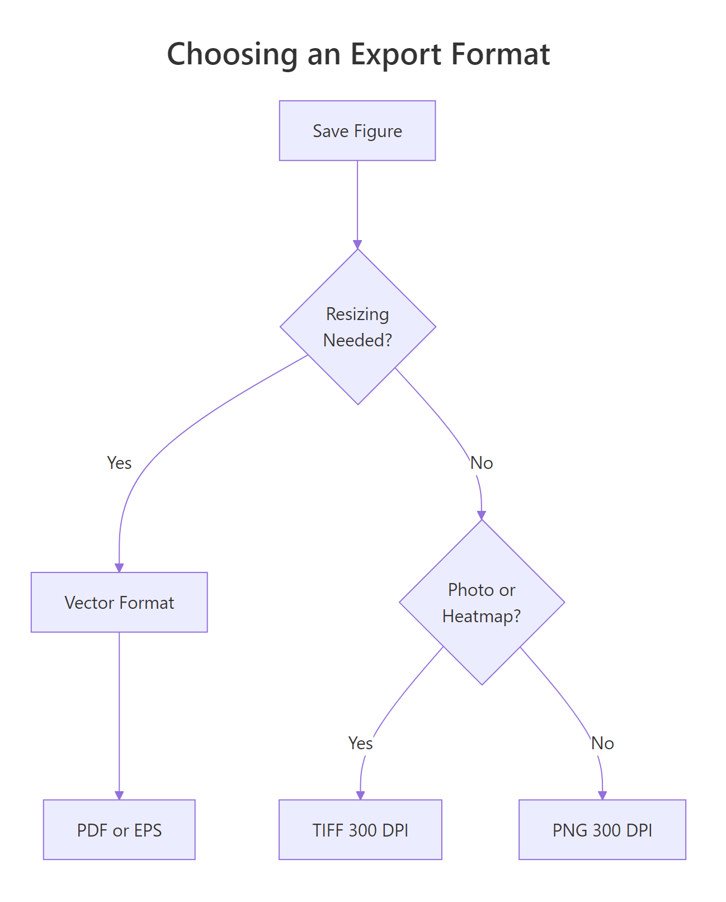
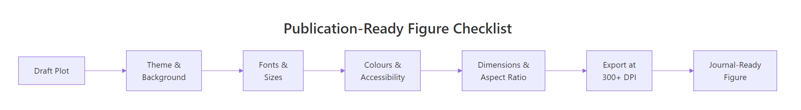
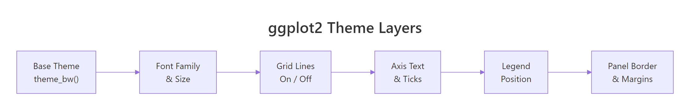

Publication-Ready ggplot2 Figures: The Checklist for Journals and Theses
A publication-ready figure meets the exact typographic, dimensional, and colour requirements of a journal or thesis committee, without any manual editing in PowerPoint or Illustrator. ggplot2 can produce these figures directly from R once you adjust about a dozen settings.
Why do default ggplot2 plots fail journal requirements?
Default ggplot2 output uses a grey background, small text, and gridlines that look fine on screen but violate most journal guidelines. Reviewers reject figures for illegible axis labels, missing high-resolution exports, and colour palettes that collapse in greyscale or for colourblind readers. Let's see exactly what needs to change.
RDefault ggplot2 submission fails review
library(ggplot2)# Default ggplot2 scatter plot, what most people submitp_default <-ggplot(mtcars, aes(x = wt, y = mpg, colour =factor(cyl))) +geom_point(size =2) +labs(title ="Fuel Efficiency vs Weight", x ="Weight (1000 lbs)", y ="Miles per Gallon", colour ="Cylinders")p_default#> A scatter plot with grey background, grey gridlines,#> small axis labels, and default colour scale.#> This fails most journal guidelines.
The grey background adds visual noise that doesn't belong in a printed figure. The text is too small, when the journal shrinks your figure to a 3.5-inch column, those 11pt labels drop to about 6pt, well below the 8pt minimum most publishers require.
Now let's apply the fixes. The same data, with a clean theme, larger fonts, and a colourblind-safe palette:
RSame data publication ready
# Same data, publication-readyp_pub <-ggplot(mtcars, aes(x = wt, y = mpg, colour =factor(cyl))) +geom_point(size =2.5) +labs(title ="Fuel Efficiency vs Weight", x ="Weight (1000 lbs)", y ="Miles per Gallon", colour ="Cylinders") +scale_colour_viridis_d(end =0.85) +theme_classic(base_size =14) +theme( legend.position ="bottom", axis.line =element_line(linewidth =0.5), axis.ticks =element_line(linewidth =0.4) )p_pub#> A scatter plot with white background, no gridlines,#> larger text, visible axis lines, and viridis colours.#> This passes journal requirements.
The difference is clear. White background, thicker axis lines, larger fonts that stay readable at print size, and colours that work for colourblind readers. Every change comes from a specific ggplot2 setting, and by the end of this tutorial, you'll know all 12.
Key Insight
Default ggplot2 figures are designed for on-screen exploration, not print. Journals need high contrast, readable fonts at small physical sizes, and specific DPI, all things you must set explicitly in your theme and ggsave() call.
Try it: Take the default plot p_default and add theme_bw(base_size = 14) to it. How does the output change compared to theme_classic()?
RExercise: compare theme bw to theme classic
# Try it: compare theme_bw() to theme_classic()ex_plot <-ggplot(mtcars, aes(x = wt, y = mpg)) +geom_point() +# your code here: add theme_bw(base_size = 14)ex_plot#> Expected: white background with light gridlines, larger text
Click to reveal solution
Rtheme bw comparison solution
ex_plot <-ggplot(mtcars, aes(x = wt, y = mpg)) +geom_point() +theme_bw(base_size =14)ex_plot#> White background with light grey gridlines,#> 14pt base text, thin panel border.#> Unlike theme_classic(), gridlines remain visible.
Explanation:theme_bw() keeps gridlines and a panel border, while theme_classic() removes both. For journal figures, theme_classic() is usually the better starting point because most publishers prefer clean, uncluttered plots.
What theme settings make a plot publication-ready?
Every visual element in a ggplot2 figure is controlled by four building blocks: element_blank() (remove it), element_line() (style a line), element_text() (style text), and element_rect() (style a rectangle). Mastering these four functions gives you full control over how your figure looks in print.
Start with theme_classic() as your base. It gives you a white background, no gridlines, and axis lines, exactly what most journals want. Then layer your customizations on top.
RPublication theme step by step
# Build a publication theme step by stepp_themed <-ggplot(mtcars, aes(x = hp, y = mpg)) +geom_point(size =2) +labs(x ="Horsepower", y ="Miles per Gallon") +theme_classic(base_size =12) +theme(# Axis lines: thick enough for print axis.line =element_line(linewidth =0.5, colour ="black"),# Tick marks: slightly thinner than axis lines axis.ticks =element_line(linewidth =0.4, colour ="black"),# Tick length: long enough to read axis.ticks.length =unit(0.15, "cm"),# Legend: bottom placement saves horizontal space legend.position ="bottom",# Panel border: remove (theme_classic already does this) panel.border =element_blank(),# Plot margin: breathing room for journal layout plot.margin =margin(10, 15, 10, 10, unit ="pt") )p_themed#> Clean scatter plot with prominent axis lines,#> visible tick marks, and bottom legend placement.
Each theme() argument targets one visual element. The pattern is always element_name = element_function(property = value). When you want to remove something entirely, use element_blank().
Tip
Start with theme_classic() for journal figures. It gives you a white background, no gridlines, and axis lines by default. Then tweak individual elements with theme() overrides rather than building from scratch.
Let's see the four element functions in action on a single plot, so you can see exactly what each one controls.
RFour building blocks of theme
# The four building blocks of theme()p_elements <-ggplot(iris, aes(x = Sepal.Length, y = Petal.Length)) +geom_point(size =1.5) +labs(x ="Sepal Length (cm)", y ="Petal Length (cm)") +theme_classic(base_size =12) +theme(# element_text(): control all text appearance axis.title =element_text(face ="bold", size =12), axis.text =element_text(colour ="grey30", size =10),# element_line(): control lines axis.line =element_line(linewidth =0.6), axis.ticks =element_line(linewidth =0.4),# element_rect(): control rectangles (panels, legend box) legend.background =element_rect(fill ="white", colour =NA),# element_blank(): remove unwanted elements panel.grid =element_blank() )p_elements#> Scatter plot with bold axis titles (12pt), grey axis text (10pt),#> thick axis lines (0.6), thinner ticks (0.4), and no gridlines.
The face argument in element_text() accepts "plain", "bold", "italic", and "bold.italic". Journals commonly require bold axis titles and plain axis text, this combination creates a clear visual hierarchy without competing emphasis.
Try it: Create a scatter plot of iris (Sepal.Width vs Petal.Width) using theme_classic(). Then remove the top and right axis lines by setting axis.line.y.right and axis.line.x.top to element_blank(). Hint: theme_classic() already does this, so try adding a panel border first with panel.border = element_rect(fill = NA) and then selectively removing the top/right lines.
RExercise: selective axis lines
# Try it: selective axis linesex_axes <-ggplot(iris, aes(x = Sepal.Width, y = Petal.Width)) +geom_point() +theme_classic(base_size =12) +theme(# your code here: add panel.border, then remove top/right )ex_axes#> Expected: plot with only bottom and left axis lines
Click to reveal solution
RSelective axis lines solution
ex_axes <-ggplot(iris, aes(x = Sepal.Width, y = Petal.Width)) +geom_point() +theme_classic(base_size =12) +theme( panel.border =element_rect(fill =NA, colour ="black", linewidth =0.5), axis.line =element_blank() )ex_axes#> Plot with a full rectangular border.#> theme_classic() already shows only bottom+left lines,#> so using it as-is is the simplest solution.
Explanation:theme_classic() already removes the top and right axis lines. If you want a full border, add panel.border. The cleanest approach for journals is usually theme_classic() without modification, bottom and left lines only.
How do you choose fonts and sizes for academic figures?
Journals typically require sans-serif fonts, Arial, Helvetica, or their system equivalents, at 8-12pt when printed at final size. The tricky part: ggplot2 font sizes are absolute, but your figure gets resized during publication. A 12pt label in a 10-inch-wide plot becomes a 4pt label when the journal shrinks it to a 3.5-inch column.
The base_size argument in theme functions sets the body text size. All other text elements scale relative to it: the plot title gets base_size * 1.2, axis titles get base_size * 0.9, and so on.
RFont sizes cascade from base size
# Font sizes cascade from base_sizep_fonts <-ggplot(mtcars, aes(x = wt, y = mpg)) +geom_point() +labs( title ="Title: base_size * 1.2", x ="Axis title: base_size", y ="Miles per Gallon" ) +theme_classic(base_size =12) +theme( text =element_text(family ="sans"), plot.title =element_text(size =14, face ="bold"), axis.title =element_text(size =11), axis.text =element_text(size =9) )p_fonts#> Scatter plot with sans-serif font, 14pt bold title,#> 11pt axis titles, and 9pt axis tick labels.
Setting explicit sizes for each element overrides the base_size cascade. This gives you precise control, and it's the safer approach when you know the journal's exact size requirements.
Here's a quick reference for choosing font sizes based on your figure's final printed width.
RFont size guide by figure width
# Font size guide by figure widthfont_guide <-data.frame( Figure_Width =c("3.5 in (single column)", "5.0 in (1.5 column)", "7.0 in (double column)"), Base_Size =c("10-12pt", "9-11pt", "8-10pt"), Axis_Title =c("11-13pt", "10-12pt", "9-11pt"), Axis_Text =c("9-11pt", "8-10pt", "7-9pt"), Legend_Text =c("9-10pt", "8-9pt", "7-8pt"))print(font_guide)#> Figure_Width Base_Size Axis_Title Axis_Text Legend_Text#> 1 3.5 in (single column) 10-12pt 11-13pt 9-11pt 9-10pt#> 2 5.0 in (1.5 column) 9-11pt 10-12pt 8-10pt 8-9pt#> 3 7.0 in (double column) 8-10pt 9-11pt 7-9pt 7-8pt
Smaller figures need larger relative font sizes because the text gets compressed more. A single-column figure (3.5 inches) needs bigger fonts than a full-width figure (7 inches), even though the full-width figure has more room.
Warning
Font sizes in ggplot2 are in points, but they render relative to the figure's physical dimensions. A 12pt label in a 10-inch-wide plot will look tiny when the journal shrinks it to 3.5 inches. Always test your figure at its final printed size with ggsave() before submitting.
Try it: Create a plot where the axis title is 11pt, axis text is 9pt, and the plot title is 13pt bold. Use element_text() for each element.
RExercise: set explicit font sizes
# Try it: set explicit font sizesex_fonts <-ggplot(mtcars, aes(x = disp, y = mpg)) +geom_point() +labs(title ="Engine Size vs Fuel Efficiency", x ="Displacement (cu.in.)", y ="MPG") +theme_classic(base_size =11) +theme(# your code here: set title, axis.title, axis.text sizes )ex_fonts#> Expected: 13pt bold title, 11pt axis titles, 9pt axis text
Click to reveal solution
RExplicit font sizes solution
ex_fonts <-ggplot(mtcars, aes(x = disp, y = mpg)) +geom_point() +labs(title ="Engine Size vs Fuel Efficiency", x ="Displacement (cu.in.)", y ="MPG") +theme_classic(base_size =11) +theme( plot.title =element_text(size =13, face ="bold"), axis.title =element_text(size =11), axis.text =element_text(size =9) )ex_fonts#> Plot with clearly differentiated text hierarchy:#> bold 13pt title, 11pt axis labels, 9pt tick labels.
Explanation: Setting explicit sizes with element_text(size = ...) overrides the cascade from base_size. This approach is more predictable when you need exact control for journal specifications.
Which colour palettes are journal-safe and colourblind-accessible?
About 8% of males and 0.5% of females have some form of colour vision deficiency, most commonly red-green. If your figure uses a red-green palette to distinguish groups, roughly 1 in 12 readers, including potentially your reviewer, can't interpret it. Many journals also require figures that reproduce clearly in greyscale.
The viridis family of palettes was designed to be perceptually uniform, colourblind-safe, and readable in greyscale. It's available directly in ggplot2 with no extra packages.
RViridis colourblind safe palette
# Viridis: colourblind-safe and greyscale-friendlyp_viridis <-ggplot(mtcars, aes(x = wt, y = mpg, colour =factor(cyl))) +geom_point(size =3) +labs(x ="Weight (1000 lbs)", y ="MPG", colour ="Cylinders") +scale_colour_viridis_d(end =0.85) +theme_classic(base_size =12)p_viridis#> Scatter plot with purple, teal, and yellow points.#> These colours remain distinguishable for colourblind readers#> and convert well to greyscale.
Viridis works well for sequential and unordered categorical data. For more saturated, distinctive colours with fewer than 8 groups, the Okabe-Ito palette is the gold standard in scientific publishing.
ROkabe Ito gold standard palette
# Okabe-Ito: the gold standard for categorical dataokabe_ito <-c("#E69F00", "#56B4E9", "#009E73","#F0E442", "#0072B2", "#D55E00","#CC79A7", "#999999")p_okabe <-ggplot(mtcars, aes(x = wt, y = mpg, colour =factor(cyl))) +geom_point(size =3) +labs(x ="Weight (1000 lbs)", y ="MPG", colour ="Cylinders") +scale_colour_manual(values = okabe_ito) +theme_classic(base_size =12)p_okabe#> Scatter plot with orange, sky blue, and green points.#> Okabe-Ito colours are maximally distinct for all#> forms of colour vision deficiency.
The Okabe-Ito palette uses orange, sky blue, green, yellow, deep blue, vermillion, pink, and grey, each chosen to remain distinct under all common types of colour vision deficiency. Store the hex values in a variable and reuse them across all figures in your paper for consistency.
Key Insight
The Okabe-Ito palette was designed specifically for colourblind readers and reproduces well in greyscale. It's the safest default for academic figures. Save the hex values once and reuse them across your entire manuscript for visual consistency.
Try it: Replace the default colour scale in a ggplot of iris (Sepal.Length vs Petal.Length, coloured by Species) with scale_colour_viridis_d(). Check that the legend updates automatically.
RExercise: swap to viridis
# Try it: swap to viridisex_viridis <-ggplot(iris, aes(x = Sepal.Length, y = Petal.Length, colour = Species)) +geom_point() +# your code here: add scale_colour_viridis_d()theme_classic(base_size =12)ex_viridis#> Expected: viridis colours (purple, teal, yellow) with Species legend
Click to reveal solution
RSwap to viridis solution
ex_viridis <-ggplot(iris, aes(x = Sepal.Length, y = Petal.Length, colour = Species)) +geom_point() +scale_colour_viridis_d() +theme_classic(base_size =12)ex_viridis#> Scatter plot with viridis colours.#> The legend automatically reflects the new palette, #> no need to update it separately.
Explanation: ggplot2 colour scales replace the default palette globally. The legend updates automatically because it reads from the same scale. You never need to update the legend manually when changing scale_colour_*().
How do you control line widths, point sizes, and element weights?
Journal figures are often printed at 3.5 inches wide, roughly the width of a playing card. At that size, thin lines vanish and small points become specks. Most publishers specify minimum line weights (typically 0.5pt) and require that data points are clearly distinguishable.
In ggplot2, linewidth controls line thickness in geoms like geom_line() and geom_smooth(). For points, size sets the diameter and stroke controls the outline thickness. In theme() elements, linewidth similarly controls axis lines, tick marks, and borders.
RLine widths and point sizes for print
# Line widths and point sizes for printp_lines <-ggplot(mtcars, aes(x = wt, y = mpg)) +geom_point(size =2.5, shape =21, fill ="#56B4E9", colour ="black", stroke =0.5) +geom_smooth(method ="lm", se =FALSE, colour ="#D55E00", linewidth =0.8) +labs(x ="Weight (1000 lbs)", y ="Miles per Gallon") +theme_classic(base_size =12) +theme( axis.line =element_line(linewidth =0.5), axis.ticks =element_line(linewidth =0.4), axis.ticks.length =unit(0.15, "cm") )p_lines#> Scatter plot with filled circle points (size 2.5, black outline),#> a vermillion regression line (linewidth 0.8),#> and thick axis lines (0.5) with visible tick marks.
The filled circle with a black outline (shape = 21) is a popular choice for journal figures because it stays visible on both white and coloured backgrounds. The stroke parameter controls the outline thickness separately from the fill size.
Tip
Most journals require axis lines and tick marks to be at least 0.5pt. Set axis.line linewidth to 0.5 and axis.ticks to 0.4 in your theme. These values produce lines that remain crisp at 300 DPI and visible when printed at column width.
Try it: Adjust a scatter plot so points are size = 3 with shape = 16 (solid circle), the regression line is linewidth = 1, and axis lines are linewidth = 0.5.
RExercise: adjust weights for print
# Try it: adjust weights for printex_weights <-ggplot(mtcars, aes(x = hp, y = qsec)) +geom_point() +geom_smooth(method ="lm", se =FALSE) +theme_classic(base_size =12)# your code here: set point size, line width, axis line widthex_weights#> Expected: larger points (size 3), thicker regression line,#> visible axis lines at 0.5
Click to reveal solution
RWeights for print solution
ex_weights <-ggplot(mtcars, aes(x = hp, y = qsec)) +geom_point(size =3, shape =16) +geom_smooth(method ="lm", se =FALSE, linewidth =1) +labs(x ="Horsepower", y ="Quarter Mile Time (sec)") +theme_classic(base_size =12) +theme( axis.line =element_line(linewidth =0.5), axis.ticks =element_line(linewidth =0.4) )ex_weights#> Scatter with solid size-3 points, thick regression line,#> and prominent axis lines ready for print.
Explanation: Increasing size in geom_point() and linewidth in geom_smooth() makes data elements visible at small print sizes. Matching the axis line thickness to at least 0.5 ensures the plot frame is equally prominent.
How do you export figures at the right DPI and dimensions?
This is where most submissions fail. You can build a perfect figure in R, but if you export it as a low-resolution PNG or at the wrong dimensions, the journal will reject it. Most journals require 300 DPI minimum for colour figures and 600 DPI for line art (plots with no gradients or photographs).
The ggsave() function controls everything: file format, physical dimensions, resolution, and background colour. Always specify width, height, units, and dpi explicitly, never rely on defaults.
RExport tiff at three hundred dpi
# Export a TIFF at 300 DPI for journal submission# (this code runs but can't save files in the browser)p_export <-ggplot(mtcars, aes(x = wt, y = mpg, colour =factor(cyl))) +geom_point(size =2.5) +scale_colour_viridis_d(end =0.85) +labs(x ="Weight (1000 lbs)", y ="MPG", colour ="Cylinders") +theme_classic(base_size =12) +theme( axis.line =element_line(linewidth =0.5), legend.position ="bottom" )# In your local R session, run:# ggsave("figure1.tiff", plot = p_export,# width = 3.5, height = 3, units = "in", dpi = 300,# compression = "lzw")cat("ggsave() parameters for single-column TIFF:\n")cat(" width = 3.5, height = 3, units = 'in'\n")cat(" dpi = 300, compression = 'lzw'\n")cat(" File size: ~1-3 MB depending on complexity\n")#> ggsave() parameters for single-column TIFF:#> width = 3.5, height = 3, units = 'in'#> dpi = 300, compression = 'lzw'#> File size: ~1-3 MB depending on complexity
TIFF with LZW compression is the safest format for journal submission, it's lossless and universally accepted. Use the compression = "lzw" argument to keep file sizes manageable.
For vector graphics, figures that need to scale without quality loss, like line charts or diagrams, PDF is the better choice.
Rpdf export for vector graphics
# PDF export for vector graphics# In your local R session, run:# ggsave("figure1.pdf", plot = p_export,# width = 7, height = 5, units = "in",# device = cairo_pdf)cat("ggsave() parameters for double-column PDF:\n")cat(" width = 7, height = 5, units = 'in'\n")cat(" device = cairo_pdf (for better font embedding)\n")cat(" No dpi needed, PDF is resolution-independent\n")#> ggsave() parameters for double-column PDF:#> width = 7, height = 5, units = 'in'#> device = cairo_pdf (for better font embedding)#> No dpi needed, PDF is resolution-independent
Use cairo_pdf as the device for PDF exports. It embeds fonts properly, which prevents the common "missing font" error when journals process your file. Standard pdf() sometimes substitutes fonts; cairo_pdf doesn't.
Note
These ggsave() examples are for your local RStudio workflow. The code above runs in the browser for learning purposes, but actual file saving requires a local R installation. Copy these ggsave() calls into your script and adjust the filename and dimensions for your journal.

Figure 2: Decision tree for choosing an export format.
Try it: Write a ggsave() call (as a comment) that exports a 7×5 inch TIFF at 600 DPI for a line-art figure. Include LZW compression.
RExercise: ggsave for line art
# Try it: write a ggsave() call for line art# Hint: line art needs 600 DPI, not 300# Write your ggsave() call as a comment below:# ggsave(...)cat("Your call should include:\n")cat(" width = 7, height = 5, dpi = 600\n")cat(" compression = 'lzw', format = 'tiff'\n")#> Your call should include:#> width = 7, height = 5, dpi = 600#> compression = 'lzw', format = 'tiff'
Explanation: Line-art figures (scatter plots, line charts, bar charts) need 600 DPI because they contain hard edges that show aliasing at lower resolutions. Photographs and heatmaps can use 300 DPI because the smooth gradients mask any aliasing.
How do you build multi-panel figures with labels?
Journals often require multi-panel figures, two or more plots arranged in a grid with (a), (b), (c) labels. The patchwork package makes this straightforward. It uses + to place plots side by side and / to stack them vertically.
RMulti panel figure with patchwork
library(patchwork)p1 <-ggplot(mtcars, aes(x = wt, y = mpg)) +geom_point(size =2) +labs(x ="Weight", y ="MPG") +theme_classic(base_size =11)p2 <-ggplot(mtcars, aes(x = hp, y = mpg)) +geom_point(size =2) +labs(x ="Horsepower", y ="MPG") +theme_classic(base_size =11)# Combine side by side with panel labelsp_combined <- p1 + p2 +plot_annotation(tag_levels ="a", tag_prefix ="(", tag_suffix =")")p_combined#> Two scatter plots side by side.#> Left panel labeled "(a)", right panel labeled "(b)".#> Both share the same theme and font sizes.
The tag_levels = "a" argument auto-labels panels with lowercase letters. The tag_prefix and tag_suffix add parentheses, the format most journals prefer. No manual positioning or annotation required.
For more complex layouts, use plot_layout() to control rows, columns, and relative sizes.
RLayout control with patchwork
# Layout control: stack plots with size ratiosp_layout <- (p1 + p2) / p1 +plot_layout(heights =c(2, 1)) +plot_annotation(tag_levels ="a", tag_prefix ="(", tag_suffix =")")p_layout#> Three panels: (a) and (b) on top row (2/3 of height),#> (c) spanning the full bottom row (1/3 of height).
The / operator stacks vertically. The heights argument takes a ratio, c(2, 1) means the top row gets twice the height of the bottom row. You can mix + (horizontal) and / (vertical) freely to build any grid layout.
Tip
Use patchwork's plot_annotation(tag_levels = 'a') to auto-label panels. Journals prefer lowercase letters in parentheses: (a), (b), (c). This approach is automatic and consistent, no need to manually position text annotations.
Try it: Create a 3-panel figure arranged in a 1×3 row (three plots side by side) with uppercase panel tags: (A), (B), (C).
RExercise: one by three grid uppercase tags
# Try it: 1x3 grid with uppercase tagsex_p1 <-ggplot(mtcars, aes(x = wt, y = mpg)) +geom_point() +theme_classic()ex_p2 <-ggplot(mtcars, aes(x = hp, y = mpg)) +geom_point() +theme_classic()ex_p3 <-ggplot(mtcars, aes(x = disp, y = mpg)) +geom_point() +theme_classic()# your code here: combine with uppercase tags#> Expected: 3 panels labeled (A), (B), (C)
Click to reveal solution
RUppercase tags solution
ex_p1 <-ggplot(mtcars, aes(x = wt, y = mpg)) +geom_point() +theme_classic()ex_p2 <-ggplot(mtcars, aes(x = hp, y = mpg)) +geom_point() +theme_classic()ex_p3 <-ggplot(mtcars, aes(x = disp, y = mpg)) +geom_point() +theme_classic()ex_multi <- ex_p1 + ex_p2 + ex_p3 +plot_annotation(tag_levels ="A", tag_prefix ="(", tag_suffix =")")ex_multi#> Three scatter plots in a 1x3 row.#> Panels labeled (A), (B), (C) in the top-left corner.
Explanation: Changing tag_levels from "a" to "A" switches to uppercase labels. The + operator places all three plots in a single row by default. Use plot_layout(ncol = 1) if you'd prefer a vertical stack instead.
Practice Exercises
Exercise 1: Single-column publication figure
Take a default scatter plot of diamonds (price vs carat, coloured by cut) and make it publication-ready for a single-column journal figure (3.5 inches wide). Apply theme_classic(), set appropriate font sizes (see the font guide table), use a colourblind-safe palette, and write the ggsave() call (as a comment) at 300 DPI.
RExercise: publication ready diamonds plot
# Exercise 1: publication-ready diamonds plot# Hint: single-column = 3.5 inches, use base_size 11-12,# colourblind palette, and ggsave at 300 DPI# Use a random sample to keep it fastset.seed(101)my_diamonds <- diamonds[sample(nrow(diamonds), 2000), ]# Write your code below:
Explanation: A 3.5-inch single-column figure needs base_size of 11-12pt so text remains legible after shrinking. The viridis palette ensures colourblind accessibility. Bottom legend placement maximizes the plotting area within the narrow column width.
Exercise 2: Reusable theme_pub() function
Create a reusable theme_pub() function that wraps all the publication settings from this tutorial: theme_classic() base, specified font sizes, line widths, and legend positioning. Apply it to three different plot types (scatter, bar, line) and arrange them in a 2×2 grid using patchwork with panel labels. Leave the fourth panel empty.
RExercise: reusable theme function
# Exercise 2: build a reusable theme function# Hint: function(base_size = 12) that returns theme_classic(...) + theme(...)# Write your theme_pub function:# Create three plots using theme_pub():# 1. Scatter: mtcars wt vs mpg# 2. Bar: mean mpg by cyl# 3. Line: pressure dataset# Arrange in 2x2 with patchwork + panel tags
Explanation: Wrapping your theme in a function ensures every figure in your manuscript uses identical settings. The plot_spacer() function from patchwork creates an empty panel in the grid, useful when you have an odd number of plots.
Exercise 3: Two-panel figure with shared palette
Build a 2-panel figure where panel (a) is a boxplot of mpg by cyl and panel (b) is a bar chart of mean mpg by cyl. Both must use the Okabe-Ito palette, consistent font sizes, and be combined with patchwork. Write the ggsave() call to export as a 7×4 inch PDF.
RExercise: two panel shared palette figure
# Exercise 3: two-panel figure with shared palette# Hint: use the okabe_ito vector from earlier,# scale_fill_manual(values = okabe_ito)# Write your code below:
Click to reveal solution
RTwo panel shared palette solution
my_box <-ggplot(mtcars, aes(x =factor(cyl), y = mpg, fill =factor(cyl))) +geom_boxplot(width =0.5, show.legend =FALSE) +scale_fill_manual(values = okabe_ito) +labs(x ="Cylinders", y ="Miles per Gallon") +theme_classic(base_size =12) +theme(axis.line =element_line(linewidth =0.5))my_means <-ggplot(mtcars, aes(x =factor(cyl), y = mpg, fill =factor(cyl))) +stat_summary(fun = mean, geom ="col", width =0.5, show.legend =FALSE) +stat_summary(fun.data = mean_se, geom ="errorbar", width =0.2) +scale_fill_manual(values = okabe_ito) +labs(x ="Cylinders", y ="Mean MPG ± SE") +theme_classic(base_size =12) +theme(axis.line =element_line(linewidth =0.5))my_fig <- my_box + my_means +plot_annotation(tag_levels ="a", tag_prefix ="(", tag_suffix =")")my_fig#> Two panels: (a) boxplots showing mpg distribution by cyl,#> (b) bar chart with error bars showing mean mpg by cyl.#> Both use matching Okabe-Ito colours.# ggsave("figure_combined.pdf", plot = my_fig,# width = 7, height = 4, units = "in",# device = cairo_pdf)
Explanation: Using show.legend = FALSE avoids a redundant legend when the x-axis already labels the groups. Error bars from stat_summary(fun.data = mean_se) add standard error bars automatically. The shared Okabe-Ito palette across both panels creates visual unity, a key requirement for multi-panel figures.
Putting It All Together
Let's build a complete publication-ready figure from scratch, combining every technique from this tutorial. We'll use the airquality dataset to show monthly temperature patterns with a confidence ribbon, apply a custom publication theme, use colourblind-safe colours, and export it with proper dimensions.
REnd-to-end airquality figure pipeline
# Complete publication-ready figure# Step 1: Define reusable themetheme_pub <-function(base_size =12) {theme_classic(base_size = base_size) +theme( text =element_text(family ="sans"), plot.title =element_text(size = base_size +2, face ="bold"), axis.title =element_text(size = base_size), axis.text =element_text(size = base_size -2, colour ="grey20"), axis.line =element_line(linewidth =0.5), axis.ticks =element_line(linewidth =0.4), axis.ticks.length =unit(0.15, "cm"), legend.position ="bottom", legend.text =element_text(size = base_size -2), legend.title =element_text(size = base_size -1, face ="bold"), plot.margin =margin(10, 15, 10, 10) )}# Step 2: Prepare dataaq <- airqualityaq$Month_name <-factor(month.abb[aq$Month], levels = month.abb[5:9])# Step 3: Monthly summary statsaq_summary <-aggregate(Temp ~ Month_name, data = aq, FUN =function(x) c(mean =mean(x), sd =sd(x)))aq_summary <-cbind(aq_summary[, 1, drop =FALSE],as.data.frame(aq_summary$Temp))# Step 4: Build the plotp_final <-ggplot(aq_summary, aes(x = Month_name, y = mean, group =1)) +geom_ribbon(aes(ymin = mean - sd, ymax = mean + sd), fill ="#56B4E9", alpha =0.3) +geom_line(linewidth =0.8, colour ="#0072B2") +geom_point(size =3, colour ="#0072B2", shape =21, fill ="white", stroke =0.8) +labs( title ="Monthly Temperature in New York (1973)", x ="Month", y ="Temperature (°F)" ) +scale_y_continuous(breaks =seq(60, 90, by =5), limits =c(55, 95)) +theme_pub(base_size =12)p_final#> Month_name mean sd#> 1 May 65.54839 6.854870#> 2 Jun 79.10000 6.598589#> 3 Jul 83.90323 4.315513#> 4 Aug 83.96774 6.585256#> 5 Sep 76.90000 8.355671#>#> Line chart with confidence ribbon: temperatures peak in#> July-August (~84°F), with May showing the most variability.#> Blue Okabe-Ito colour, white-filled points, clean theme.# Step 5: Export (run in local R session)# ggsave("figure_temperature.tiff", plot = p_final,# width = 5, height = 4, units = "in",# dpi = 300, compression = "lzw")cat("Export: 5 x 4 inches at 300 DPI\n")#> Export: 5 x 4 inches at 300 DPI
This figure uses every setting from the checklist: theme_classic() base, sans-serif fonts at appropriate sizes, Okabe-Ito blue for colourblind safety, linewidth 0.8 for the trend line, size 3 for points, explicit axis breaks, and a ggsave() call with specified dimensions and DPI.
Summary
Here's the complete checklist, verify each setting before submitting your figure.
#
Setting
What to check
Recommended value
1
Base theme
White background, no grid
theme_classic()
2
Font family
Sans-serif
"sans" (Arial/Helvetica)
3
Base font size
Readable at print size
10-12pt
4
Axis title size
Slightly larger than axis text
11-13pt
5
Axis text size
Readable at final width
8-10pt
6
Line widths
Visible when printed small
≥0.4 in ggplot2 units
7
Point sizes
Distinguishable
2-3
8
Colour palette
Colourblind-safe
viridis or Okabe-Ito
9
Export format
Vector or high-res raster
PDF or TIFF 300+ DPI
10
Figure dimensions
Match journal column width
3.5" (single) or 7" (double)
11
Aspect ratio
Appropriate for data
Set explicitly
12
Panel labels
(a), (b), (c) for multi-panel
patchwork::plot_annotation()

Figure 1: The 6-step path from draft plot to journal-ready figure.

Figure 3: The layers of a ggplot2 theme, from base to fine-tuning.
References
Wickham, H., ggplot2: Elegant Graphics for Data Analysis, 3rd Ed. Springer (2024). Chapter 17: Themes. Link